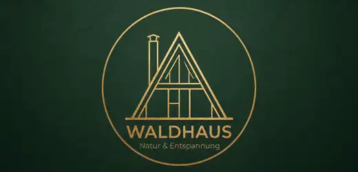

Langsam anfangen.
Kaffee. Ruhe. Vielleicht noch gar nichts entscheiden.
50°20'55.2″ N · 6°30'49.8″ E
Im Feriendorf Kerschenbach beginnt die Eifel direkt vor der Tür. Für Tage, die nicht durchgetaktet sein müssen.

Das Waldhaus
Und genau das ist der Luxus.
Kein Hotelkorridor, kein Programm, kein „das müsste man noch sehen“. Das Waldhaus ist ein Rückzugsort im Grünen: Tür auf, Waldluft rein, Tempo raus.
Feriendorf Kerschenbach
Der Satellitenflug endet dort, wo der Lageplan übernimmt. So bleibt die Orientierung real – und das Feriendorf wiedererkennbar.

Ein Tag im Waldhaus
Die Eifel funktioniert am besten ohne Checkliste. Ein paar Ideen reichen.
Kaffee. Ruhe. Vielleicht noch gar nichts entscheiden.
Waldwege und die Arnika-Route beginnen rund um Kerschenbach.
Kronenburg, Kronenburger See oder einfach die nächste Bank mit Aussicht.
Zurück ins Waldhaus. Morgen ist auch noch ein Tag.
Waldhaus Kerschenbach
Ein Haus im Grünen, ein paar Tage Abstand und genug Ruhe, damit der Kopf wieder Platz bekommt.
Noch einmal anfliegen ↑